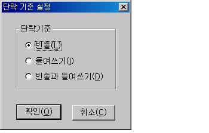

저시력 사용자의 경우, 자신의 시각적 특성에 맞게 글꼴, 글자색, 배경색 등을 지정해 독서기를 이용할 수 있습니다. 구성 요소의 디스플레이 속성을 변경하려면 [설정] -> [문서] -> [글꼴 설정] 메뉴를 차례대로 실행합니다.
대화상자가 출력되면 처음 포커스된 구성 요소 목록에서 사용자가 변경을 원하는 항목을 <Space> 키를 눌러 선택합니다. 예를 들어, '주제목' 항목만을 선택하고 글꼴 크기를 변경했다면 변경된 글꼴 크기는 주제목에만 적용됩니다.
변경을 원하는 항목을 선택한 이후, 사용자의 목적에 맞게 '글꼴', '글자색', '배경색' 등의 버튼을 누르면 해당 속성을 변경할 수 있는 대화상자가 출력됩니다.
'글꼴' 버튼을 선택했을 때는 윈도우즈의 표준적인 글꼴 설정과 동일한 형태의 대화상자가 나타납니다. 이 대화상자에서 사용자가 원하는 폰트와 크기 및 스타일 등의 속성을 지정합니다.
'글자색'과 '배경색' 버튼을 선택한 경우, 색상을 선택할 수 있도록 구성된 대화상자가 출력됩니다. 기본적으로 제공된 표준색 외에 사용자가 임의로 지정한 색상을 선택하려면 '사용자 지정색 만들기' 기능을 이용해 색상 패턴을 지정한 다음 해당 색상을 선택하면 됩니다.
* '배경색' 기능은 글자 뒷부분의 배경 색상을 지정하는 기능입니다. 글자가 위치하지 않은 배경의 색상을 지정하려면 [배경 화면] 메뉴를 실행해 원하는 색상을 지정합니다.
* 색상을 변경하지 않고 단순히 화면의 확대 비율을 조정하고 싶다면, <Ctrl> 키를 누른 상태에서 마우스 휠을 위/아래로 이동하여 화면의 확대 비율을 조정합니다.
파일로 잘라내기나 파일로 복사 등의 기능을 사용할 때 저장될 파일 이름을 지정합니다.
사용자가 설정을 변경하지 않았다면 기본 설정값은 'xvbrd.cap' 입니다.
캡쳐 파일의 이름을 변경 하려면 [설정] 메뉴의 [캡쳐 파일 변경] 메뉴를 실행합니다. '캡쳐 파일 변경' 대화상자가 나타나면 편집창에 원하는 파일 이름을 입력하고 '확인'버튼을 누릅니다. 이 때 경로는 입력하지 않습니다.
* 캡쳐 파일은 현재 열려진 파일이 위치한 폴더에 자동 생성됩니다.
목차 관련 기능을 사용하기 위해 기준이 되는 목차 문자를 지정합니다.
목차 문자는 '목차 시작 문자'와 '목차 끝 문자'로 지정해야 하며, 기본 설정된 문자는 각각 '@[' 기호와 '@]' 기호입니다.
사용자가 문서 파일에서 목차를 지정하면 해당 라인이 목차 시작 문자와 목차 끝 문자로 감싸지게 됩니다. 반대로 어떤 문서 파일을 열었을 때 목차 시작 문자와 목차 끝 문자가 발견되면 해당 라인을 목차로 인식하게 됩니다.
목차 문자를 설정하기 위해서는 [설정] 메뉴의 [목차 문자 설정] 메뉴를 사용합니다.
메뉴를 실행하면 '목차 문자 설정' 대화상자가 나타나고 이 곳에 목차의 시작 문자와 끝 문자를 해당되는 편집창에 각각 입력한 후 '확인' 버튼을 눌러 목차 문자를 변경할 수 있습니다.
일반 텍스트 파일의 경우 단락을 나타내는 특별한 기준은 없습니다. 어느 경우 단락을 나타내기 위해 들여쓰기를 할 때도 있고, 어느 경우는 줄을 띄우는 방법을 사용할 때도 있습니다. 그렇기 때문에 단락 관련 기능을 사용하기 위해서는 현재 문서 파일에 맞는 단락 기준의 설정이 필요합니다.
[설정] 메뉴의 [단락 기준 설정] 메뉴를 실행하면 '단락 기준 설정' 대화상자가 나타납니다. 선택할 수 있는 기준이 라디오 버튼으로 나타나며, 이곳에서 단락을 구분하기 위한 기준을 설정할 수 있습니다. 여기서 설정한 단락 기준으로 단락을 구분하여 단락 관련 기능을 수행하게 됩니다.

단락 기준으로 사용할 수 있는 기준점은 다음과 같습니다.
1. 빈줄: 빈줄 후에 나타나는 내용을 다른 단락으로 인식합니다.
2. 들여쓰기: 내용의 시작이 첫번째 칸이 아니면 다른 단락으로 인식합니다.
3. 빈줄과 들여쓰기: 빈 줄이 나타나고 내용의 시작이 첫번째 칸이 아니면 다른 단락으로 인식합니다.
센스 독서기가 파일을 열 때 편집 모드로 시작할 것인지 선택합니다.
기본적으로 센스 독서기는 파일을 독서 모드로 열게 되는데, 편집 작업을 많이 이용하는 사용자의 경우 이 설정을 해 두면 편집 모드로 파일을 열어주어 <Alt-z>키를 눌러 모드를 전환하지 않아도 됩니다.
이 설정을 하기 위해서는 [설정] 메뉴의 [편집 모드로 프로그램 실행] 메뉴를 사용합니다. 체크 메뉴이기 때문에 한 번 실행시마다 설정값이 토글됩니다.
워드랩 기능은 한 줄의 내용이 너무 길어 내용 파악이 힘든 경우 사용자가 지정한 위치에서 라인을 분할해 주는 기능입니다.
독서기는 기본적으로 워드랩이 설정되어 있지 않으며, 사용자는 필요에 따라 옵션을 변경하여 워드랩을 지정할 수 있습니다. 문서가 열린 이후 워드랩 설정을 변경하였다면 일단 독서창을 닫은 이후 다시 문서를 열어야 변경된 워드랩이 적용됩니다.
[설정] 메뉴의 [워드랩 설정] 메뉴를 실행하면 '워드랩 설정' 대화상자가 나타나며, 다음과 같이 설정합니다.
① '워드랩 설정' 대화상자가 나타나면 <위/아래 화살표> 키를 이용하여 다음 세 가지 옵션 중 하나를 선택합니다.
- 워드랩 사용 안함 : 워드랩을 사용하지 않습니다.
- 워드랩 창에 맞춤 : 현재 화면에 나타난 독서창의 크기를 기준으로 워드랩을 적용합니다. VBF 파일의 경우 이 옵션은 '워드랩 사용자 정의' 옵션으로 대체됩니다.
- 워드랩 사용자 정의 : 사용자가 지정한 문자 수에 따라 워드랩을 지정합니다. 이 옵션이 선택된 경우 '줄 길이' 편집창이 활성화됩니다.
편집창에 사용자가 원하는 문자 수를 입력합니다. 이 때, 입력하는 문자 수는 한글, 영어, 숫자 등의 문자 종류와 상관없이 1로 게산합니다.
② 워드랩 설정을 변경하였다면 '확인' 버튼을 눌러 대화상자를 닫습니다.
변경된 워드랩 설정을 적용하려면 독서창을 닫은 후 문서를 다시 엽니다.
* 워드랩 사용자 정의를 사용하는 경우 문서를 변경하고 저장했다면 사용자가 지정한 워드랩 위치에 엔터값이 삽입된다는 점에 주의합니다.